install-pairwise-negative/cancel-during-install FAIL
20261104T224831Z-install-pairwise-negative-cancel-during-install-1 · attempt 1 · 939 s · class -
Reason: Scenario purpose contradicted on the signed preview32 ISO: cancelling at 56% during the packages job does not cancel — the pacman transaction completes after Calamares quits (pacman.log hooks finish ~18s after confirmation) and the target boots to the greeter with the created user and system profile present. Live-session cleanup itself was clean (no stale mounts/processes/swap). Tracked as HorneroOS/installer#93; no failure class attributed.
Instruction
Using the existing VM harness (~/.local/share/hornero/install-test/run-install-vm.sh <name> uefi 40 iso), boot the candidate ISO, start a Desktop installation, cancel it while packages are being installed, then reboot with the ISO detached and confirm the target does not boot into an installed system. Reattach the ISO and leave the live session running for the proofs.
Proof
| where | kind | note | detail | |
|---|---|---|---|---|
| ❌ | manual-import | manual | Operator-supplied verdict for the manual run; see RESULT.md. No scenario proof probe results are recorded by the importer. | logs/RESULT.md |
Product and environment
| iso | horneroos-2026.10-preview32-x86_64.iso |
|---|---|
| iso_sha256 | b8cd0f8604bc69f7d2112fb8bccd97115d32d197e9c92c62e02faf5de6345aec |
| installer_sha | 329e66831ad5a31e48c466771f015ef05568e571 |
| product_sha | a44964197c456fa44faeaff675206705c7bbdf1b |
| engine | manual-qmp-install-harness |
| hornero_qa | 0.1.0 |
| source_dir | preview32-cancel-during-install |
| imported_via | hornero-qa import |
Screenshots

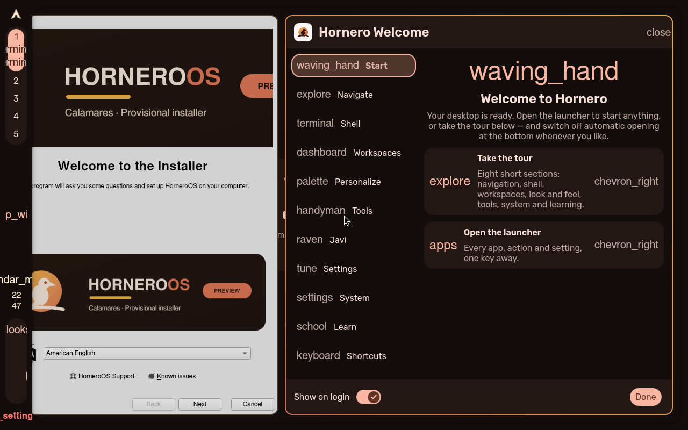

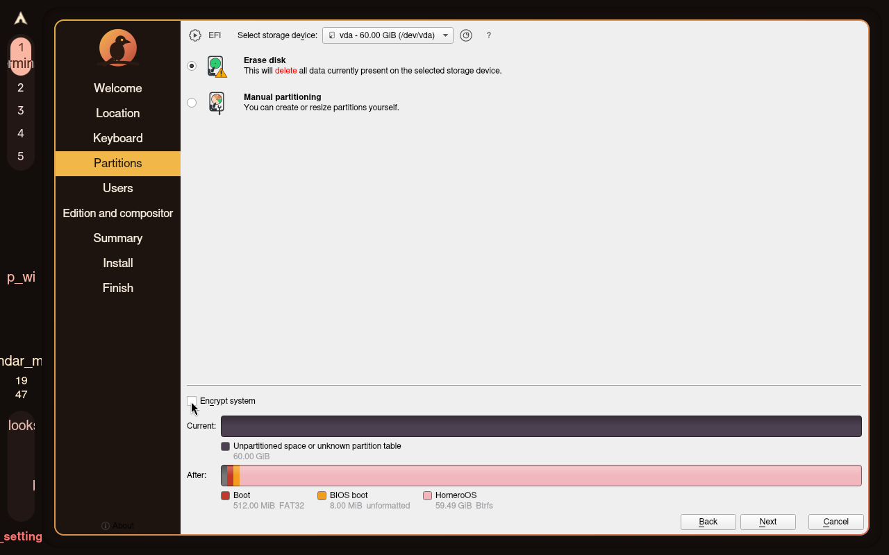

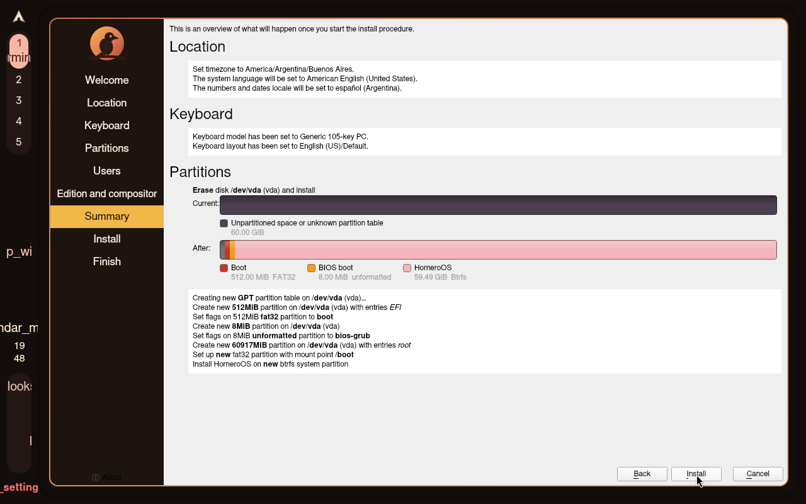

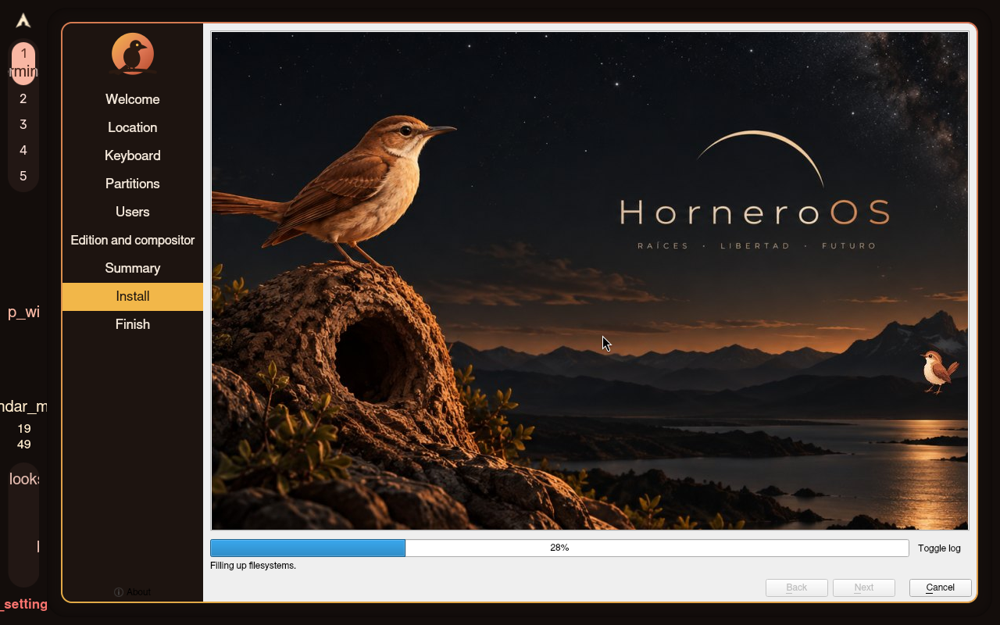


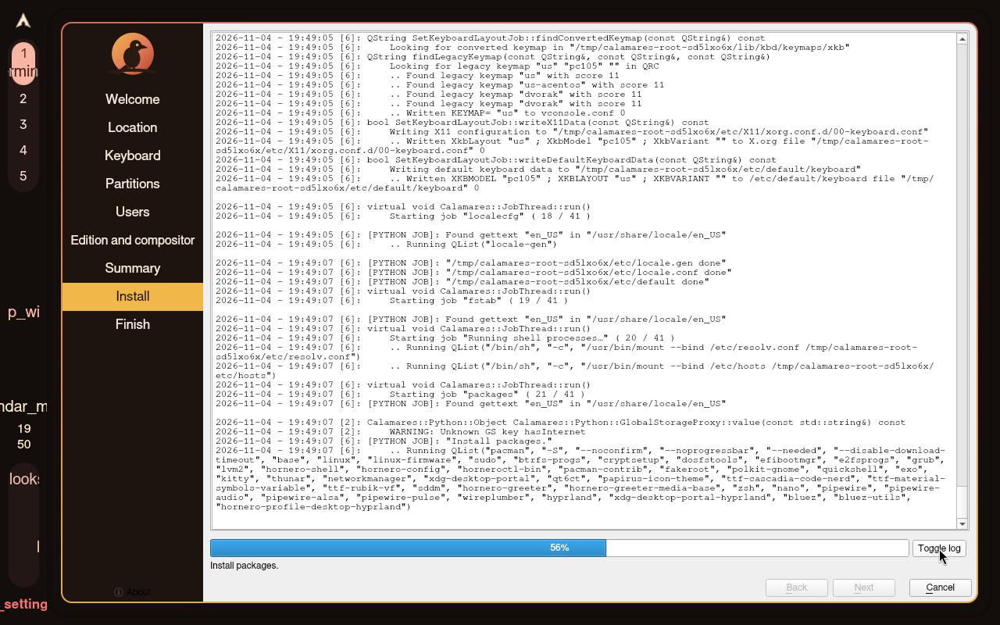

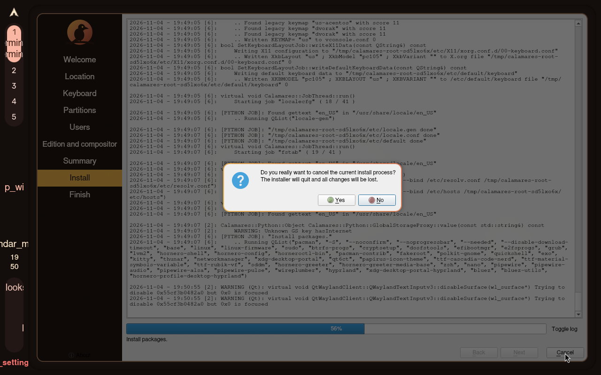

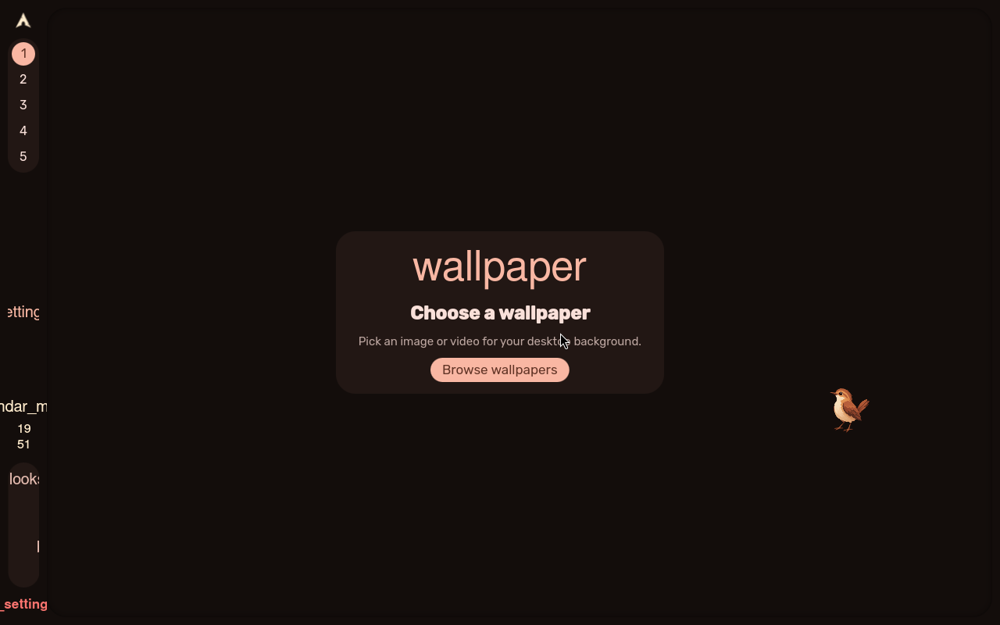

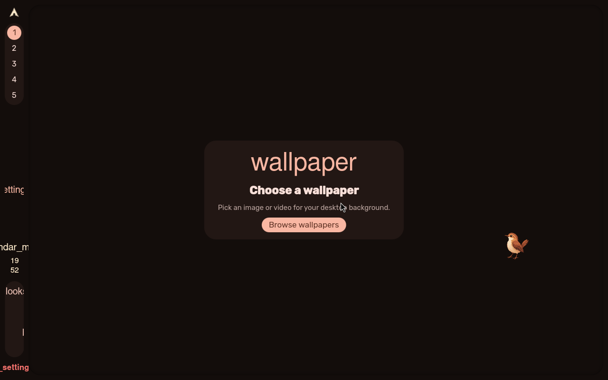

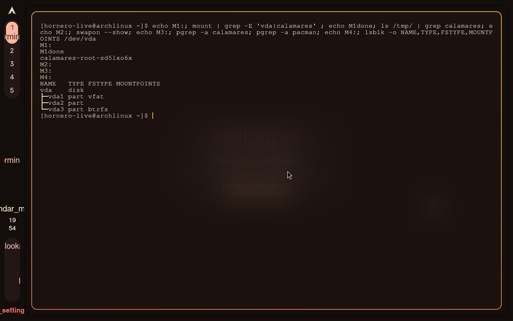


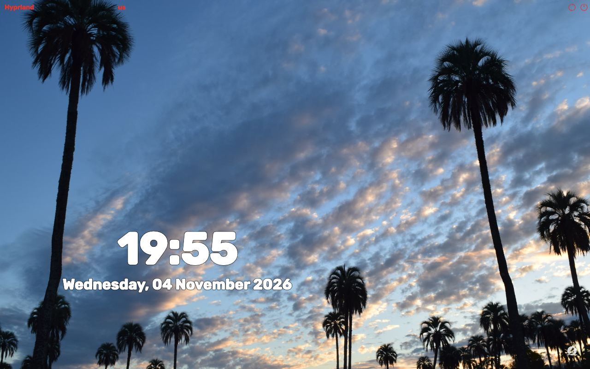

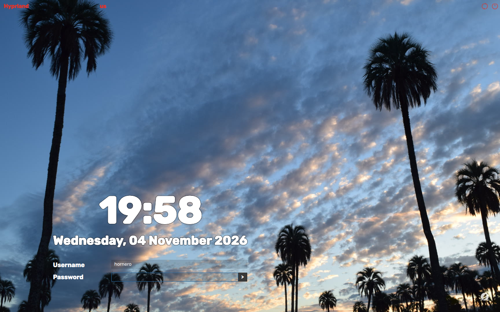


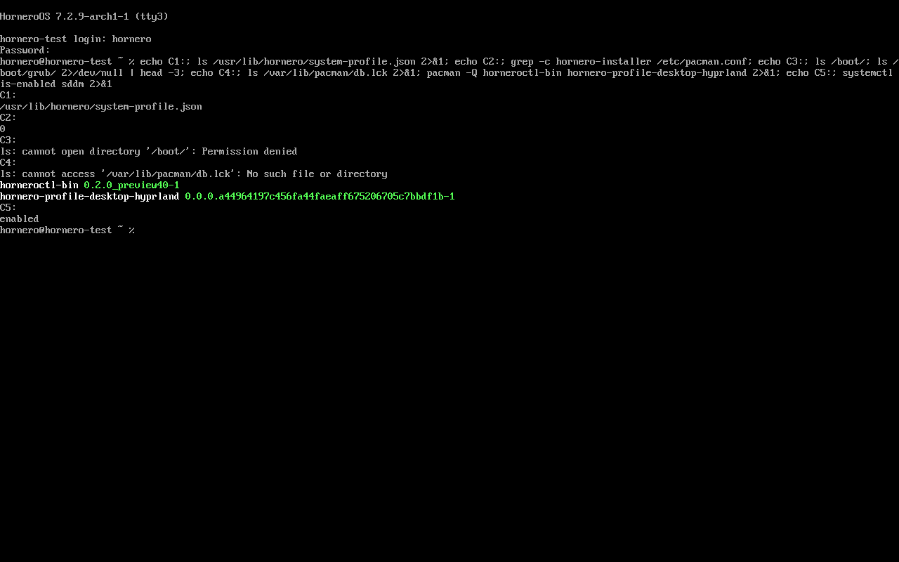

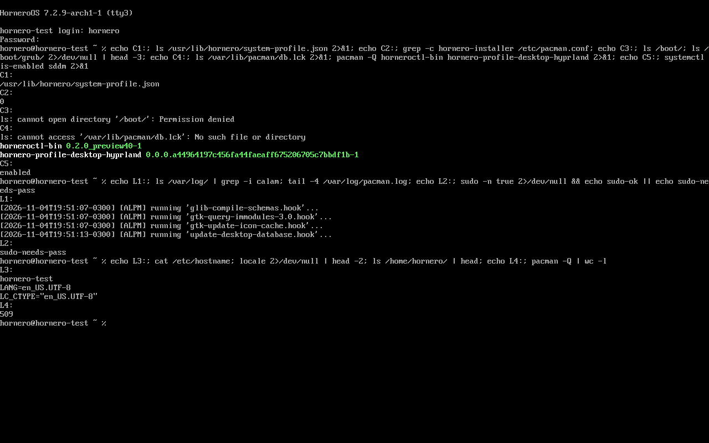
Actions
{"t": 0, "kind": "manual-run", "source": "preview32-cancel-during-install"}
{"t": 939, "kind": "import", "tool": "hornero-qa import", "result_md": "logs/RESULT.md", "screenshots": 16}
Logs: logs/ · machine-readable: run.json, result.json, assertions.json, actions.jsonl